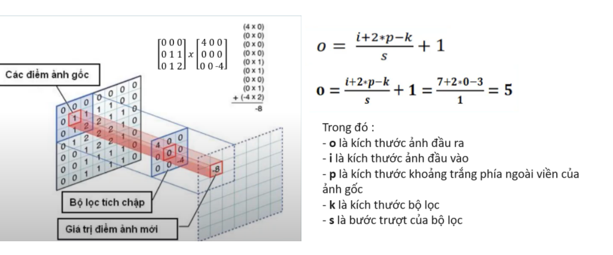
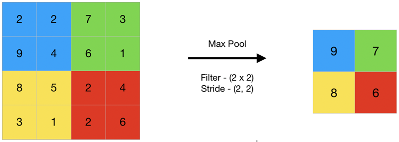
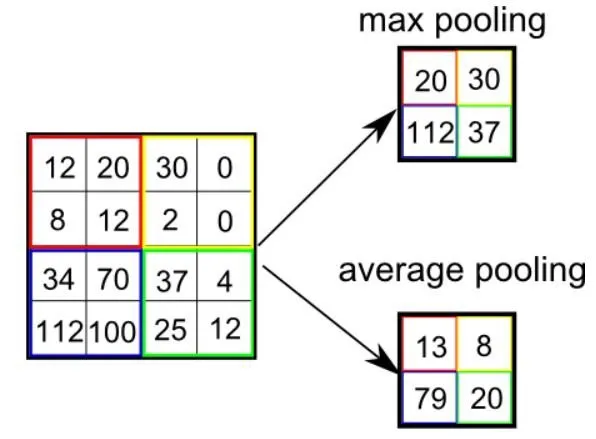
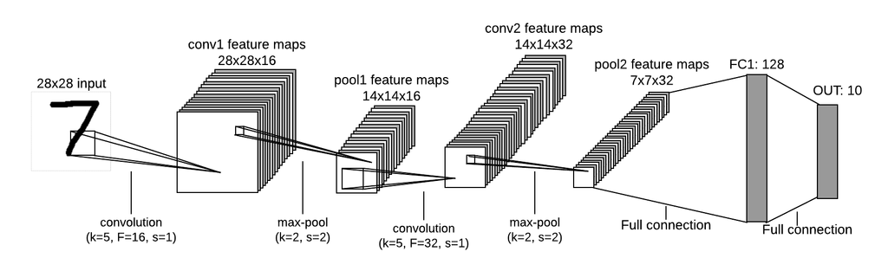

Convolutional Neural Network là gì?
- Convolutional Neural Network là một trong những mô hình Deep Learning tiên tiến giúp cho chúng ta
xây
dựng được những hệ thống thông minh với độ chính xác cao.
- Do sử dụng các lớp liên kết đầy đủ giữa các điểm ảnh và node , các mạng nơ-ron nhân tạo truyền
thẳng
thường bị hạn chế bởi kích thước của ảnh , ảnh càng lớn thì số lượng liên kết càng tăng nhanh kéo
theo
sự bùng nổ khối lượng tính toán.
- Sự liên kết đầy đủ này cũng là sự dư thừa với mỗi bức ảnh , các thông tin chủ yếu thể hiện qua sự
phụ
thuộc giữa các điểm ảnh với những điểm xung quanh nó mà không quan tâm nhiều đến các điểm ảnh ở cách
xa
nhau.
=> Mạng CNN ra đời với kiến trúc thay đổi , có khả năng xây dựng liên kết chỉ sử dụng một phần cục
bộ
trong ảnh kết nối đến node trong lớp tiếp theo thay vì toàn bộ ảnh như trong mạng nơ-ron truyền
thẳng.
- Các lớp cơ bản trong một mạng CNN bao gồm : lớp tích chập (Convolutional), lớp lấy mẫu (Pooling)
và
lớp kết nối đầy đủ (Full-connected) :

Feature là gì?
- Đây là một yếu tố quan trọng trong mạng Neural Convolutional (CNN) đề cập đến các đặc điểm cụ thể
hoặc
mẫu trong dữ liệu hình ảnh. Các Feature có thể là những phần tử nhỏ, gần như được xem như những mảng
hai
chiều nhỏ được trích xuất từ hình ảnh. Chúng được sử dụng để biểu diễn các đặc trưng cục bộ như
cạnh,
góc, texture hoặc các mẫu cụ thể không gian trong hình ảnh.
- Trong quá trình triển khai, mạng CNN tự động học cách trích xuất các Feature từ dữ liệu hình ảnh.
Các
Feature này có thể được trích xuất thông qua tầng convolutional của mạng, trong đó các bộ lọc
(filters)
được áp dụng để tìm các Feature cụ thể trong từng phần của hình ảnh.
- Việc khớp Feature với các đặc trưng chung trong hình ảnh cho phép mạng CNN nhận biết các đối
tượng,
biểu hiện hoặc phân loại các hình ảnh dựa trên các đặc trưng cụ thể này. Điều này giúp cho mạng CNN
trở
nên mạnh mẽ hơn trong việc nhận dạng và phân loại hình ảnh dựa trên các đặc trưng cục bộ.
Convolution Layer
Convolution (lớp tích chập) là lớp đầu tiên trích xuất các đặc tính từ hình ảnh. Tham số lớp này
bao gồm một tập hợp các bộ lọc có thể học được. Các bộ lọc đều nhỏ thường có kích cỡ hai chiều
đầu tiên khoảng 3x3 hoặc 5x5, .... và có độ sâu bằng với độ sâu của đầu vào đầu vào. Bằng cách
trượt dần bộ lọc theo chiều ngang và dọc trên ảnh, chúng thu được một Feature Map chứa các đặc
trưng được trích xuất từ trên hình ảnh đầu vào.
Quá trình trượt các bộ lọc thường có các giá trị được quy định bao gồm:
- padding: quy định bộ đệm của bộ lọc hay chính là phần màu xám được thêm vào ảnh.
- stride: quy định bước nhảy trong quá trình thực hiện.

Pooling layer
Pooling layer thường được dùng giữa các convolutional layer, để giảm kích thước dữ liệu nhưng
vẫn giữ được các thuộc tính quan trọng. Kích thước dữ liệu giảm giúp giảm việc tính toán trong
model. Trong quá trình này, quy tắc về stride và padding áp dụng như phép tính convolution trên
ảnh.

Có 2 loại pooling layer phổ biến là: max pooling và average pooling.

Fully connected layer
Sau khi ảnh được truyền qua nhiều convolutional layer và pooling layer thì model đã học được
tương đối các đặc điểm của ảnh thì tensor của output của layer cuối cùng sẽ được là phẳng thành
vector và đưa vào một lớp được kết nối như một mạng nơ-ron. Với FC layer được kết hợp với các
tính năng lại với nhau để tạo ra một mô hình. Cuối cùng sử dụng softmax hoặc sigmoid để phân
loại đầu ra.

Visualise convolutional neural network
Mô hình convolutional neural network : Input image -> Convolutional layer (Conv) + Pooling layer (Pool) -> Fully connected layer (FC) -> Output. 
Ý tưởng xây dựng Convolutional Neural Network
Trường tiếp nhận cục bộ (Local receptive field)
- Trong mạng Neural Convolutional (CNN), trường tiếp nhận cục bộ (local receptive field) đề cập đến
phạm
vi không gian trên ảnh đầu vào mà mỗi neuron trong tầng convolutional kết nối đến. Mỗi neuron trong
tầng
convolutional chỉ kết nối với một phần nhỏ của ảnh đầu vào thay vì kết nối với toàn bộ ảnh. Đây
chính là
trường tiếp nhận cục bộ của neuron.
- Khi áp dụng phép tích chập lên ảnh đầu vào, các neuron trong tầng convolutional chỉ xử lý thông
tin từ
một phần nhỏ của ảnh, đóng vai trò như một khu vực cục bộ. Qua đó, mỗi neuron có thể tập trung vào
việc
nhận diện các đặc trưng cục bộ. Chẳng hạn như cạnh, góc hoặc texture trong ảnh một cách hiệu quả.
Trọng số chia sẻ (Shared weight and bias)
- Trọng số chia sẻ (shared weights) được áp dụng cho các bộ lọc (filters) sử dụng trong tầng
convolutional của mạng. Ý tưởng chính là các neuron trong cùng một tầng convolutional sử dụng cùng
một
bộ lọc để thực hiện phép tích chập trên đầu vào. Tương tự, trọng số chia sẻ cũng được áp dụng cho
bias.

Lớp tổng hợp (Pooling layer)
- Lớp tổng hợp (Pooling layer) là một phần quan trọng của kiến trúc CNN. Nền tảng được sử dụng để
giảm
kích thước của Feature map (bản đồ đặc trưng) tạo ra từ tầng convolutional.
- Lớp tổng hợp thường được sử dụng sau mỗi tầng convolutional để giảm chiều dài yêu của dữ liệu,
giảm độ
phức tạp tính toán và tạo ra tính bất biến đối với sự thay đổi nhỏ trong dữ liệu đầu vào.
 - Có hai loại tổng hợp phổ biến được sử dụng trong CNN là:
- Có hai loại tổng hợp phổ biến được sử dụng trong CNN là:
* Max Pooling: Trong tầng tổng hợp theo phương thức này, giá trị lớn nhất trong một vùng cụ thể của
Feature map được chọn để tạo ra Feature map mới với kích thước giảm xuống.
* Average Pooling: Trong tầng tổng hợp theo phương thức này, giá trị trung bình của một vùng cụ thể
của
Feature map được lấy để tạo ra Feature map mới.
Cách chọn tham số cho CNN
- Khi chọn tham số cho mạng Neural Convolutional (CNN), người thực hiện nên xác định quy trình chung
để
điều chỉnh và tối ưu hóa hiệu suất của mô hình. Dưới đây là một số phương pháp thường được sử
dụng:
 - Kiến trúc mô hình: Lựa chọn kiến trúc mô hình phù hợp với bài toán cụ thể, bao gồm số lớp
convolutional,
số lớp tổng hợp, số lượng neuron trong các lớp fully connected, kích thước và bước nhảy của bộ lọc
và
các kỹ thuật như dropout và batch normalization.
- Kiến trúc mô hình: Lựa chọn kiến trúc mô hình phù hợp với bài toán cụ thể, bao gồm số lớp
convolutional,
số lớp tổng hợp, số lượng neuron trong các lớp fully connected, kích thước và bước nhảy của bộ lọc
và
các kỹ thuật như dropout và batch normalization.
- Tốc độ học (learning rate): Điều chỉnh tốc độ học cực kỳ quan trọng để đảm bảo rằng mô hình hội tụ
đúng
cách mà không bị quá fitting hoặc underfitting.
- Thuật toán tối ưu hóa: Sử dụng các thuật toán tối ưu hóa như Adam, SGD, RMSprop để điều chỉnh việc
cập
nhật trọng số trong quá trình huấn luyện.
- Kích thước batch: Lựa chọn kích thước batch phù hợp, đảm bảo cân bằng giữa việc cập nhật trọng số
và
tài
nguyên tính toán.
- Hàm kích hoạt: Sử dụng hàm kích hoạt phù hợp như ReLU, Sigmoid, Tanh, hoặc Leaky ReLU để tối ưu
hóa
việc
lan truyền ngược và đảm bảo tính phi tuyến của mô hình.
- Khởi tạo trọng số: Lựa chọn phương pháp khởi tạo trọng số ban đầu như Xavier, He, Glorot để đảm
bảo
việc
huấn luyện hiệu quả.
- Kiểm tra và đánh giá: Sử dụng các kỹ thuật kiểm tra và đánh giá như cross-validation, early
stopping
để
đảm bảo mô hình không bị overfitting và có khả năng tổng quát hóa tốt trên dữ liệu kiểm tra.